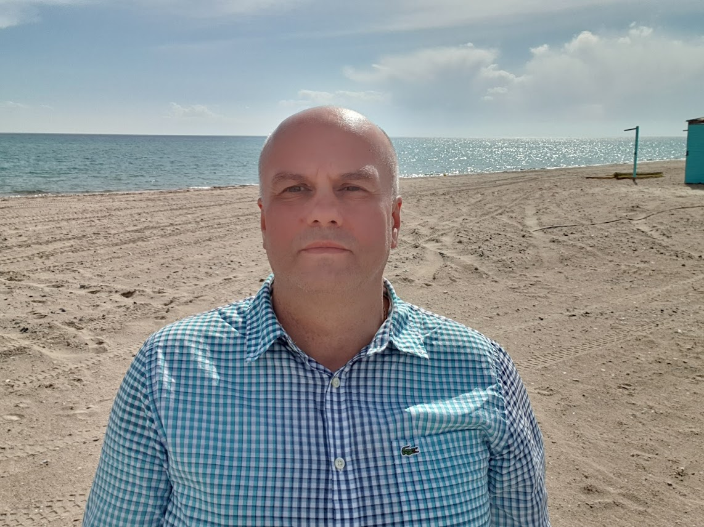

|  | Alexander PetroschukProfessional investor and entrepreneur Solid experience in emerging markets. Over twenty years of funds management, investment sourcing, deals structuring, development of companies, turnarounds management, M&A and spin-offs; successful investment banking and provision of executive leadership in the areas of strategic development, operations, capitalization and finance. Proven ability to negotiate and resolve complex situations. Developed network of financial and business contacts globally. |
| Dates | Work |
|---|---|
| 2016 to Date | ElSpi Real Estate, Greece |
| 2012-2014 | Global Music Entertainment LTD, Founding Partner, Chairman of the Supervisory Board, Kiev, Ukraine |
| 2001-2013 | Euroventures Ukraine Fund (EVU), Partner, Investment Committee Member; Kiev, Ukraine |
| 2000-2001 | Foyil Asset Management, Investment Manager/Analyst, Kiev, Ukraine |
| 1996-2000 | Western NIS Enterprise Fund, Investment Associate, Kiev, Ukraine |
| 1991-1994 | Ukrtelecom, Engineer, Kiev, Ukraine |
| 1988-1991 | The Navy. Latvia, Estonia. Commander of a submamrine unit. |
My Hobbies |